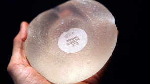

|
|
جمع آوری سیلیکون های غیراستاندارد پستان از بازار ایران
Monday10 بهمن 1390
بی بی سی فارسی: در ادامه روند جمعآوری پروتزهای پستان "پلی ایمپلنت" که از فرانسه آغاز شده، سعیدرضا شاهمرادی، مدیرکل تجهیزات پزشکی وزارت بهداشت ایران اعلام کرده که "پروتزهای (سیلیکون های) پستان غیراستاندارد از بازار ایران جمعآوری شده است."
مدیرکل تجهیزات پزشکی وزارت بهداشت در گفتگو با خبرگزاری فارس، از زنان ایرانی که از این محصول استفاده کردهاند، خواسته به پزشک مراجعه کنند و در صورتی که پزشک تشخیص داد خطری سلامت آنها را تهدید میکند، نسبت به خارج کردن آن اقدام کنند و در غیر اینصورت جای نگرانی نیست.
آقای شاهمرادی با اشاره به اینکه براساس تحقیقات انجام شده در کشورهای اروپایی مشخص شده که این سیلیکون از مواد نامرغوب تهیه شده و در بدن زنان از هم پاشیده و منجر به بروز تومور سرطانی میشود، افزود:" از حدود چهار سال پیش حدود دو هزار پروتز (سیلیکون) پستان پولی ایمپلنت وارد کشور شده که از این تعداد حدود یک هزار و ۴۱ عدد آن جمع آوری شده است و حدود هزار پروتز مورد استفاده قرار گرفته است."
پیشتر در فرانسه این نگرانی مطرح شده بود که بافت های سیلیکونی پیوندی شرکت پولی ایمپلنت پروتز (Poly Implant prothese (PIP که مرکز آن در مارسی فرانسه است، بالقوه می تواند خطر ابتلا به سرطان را افزایش دهد.
تاکنون هشت مورد سرطان در بین زنانی که از بافت سیلیکونی این شرکت استفاده کرده اند، گزارش شده است.خاویر برتراند، وزیر بهداشت فرانسه از زنانی که از این نوع سیلیکون استفاده کرده اند خواست که به عنوان یک "اقدام پیشگیرانه" این مواد را از بدنشان خارج کنند؛ هر چند تأکید کرد که نیاز به جراحی "فوری" نیست.
دولت فرانسه اعلام کرده است که"هزینه عمل جراحی برای خارج کردن سیلیکون، از صندوق بهداشت عمومی فرانسه پرداخت میشود؛ اما هزینه گذاشتن مجدد سیلیکون در پستان فقط به افرادی پرداخت می شود که برای ترمیم بیماری سرطان پستان مجبور به استفاده از سیلیکون هستند و نه در موارد مربوط به زیبایی."
آقای شاهمرادی گفته قیمت این پروتزها در بازار بین ۱۲۰ تا ۱۳۰ دلار است و به دلیل ورشکستگی شرکت توزیع کننده و نمایندگی آن، "جایی برای پرداخت غرامت و خسارت به زنانی که از این پروتز استفاده کردند وجود ندارد و بیمههای تکمیلی باید از بیمه شدگانش در این زمینه حمایت کند."
استفاده از محصولات شرکت فرانسوی پی آی پی در سال ۲۰۱۰ در فرانسه قدغن شد چرا که در این سیلیکونها از ژل صنعتی به جای ژل پزشکی استفاده شده و باعث افزایش پارگی آنها شده بود.
آقای شاهمرادی همچنین اعلام کرده که "تمام پروتزهای این شرکت از ۳۳ مرکز جراحی و عرضه این کالا جمع آوری شده و اکنون در بازار وجود ندارد."
پلیس فرانسه، رئیس شرکت پی آی پی (PIP)، تولید کننده سیلیکونهای پستان، که با کیفیت غیر استاندارد تولید و توزیع شده بودند را در ششم بهمن ماه سالجاری، بازداشت کرد.
منابع پلیس فرانسه به خبرنگاران گفته اند ژان کلودما در منزل خود در جنوب فرانسه بازداشت شده است.
اتهام وی مواردی چون کلاهبرداری و قتل نفس را شامل می شود.
استفاده از مواد غیر استاندارد در تولید سیلیکون های معیوب توسط شرکت پی آی پی (Poly Implant Prothese) طی مدتی طولانی صورت گرفته و محصولات این شرکت در بدن تعداد زیادی از زنان ۶۵ کشور جهان از آمریکای لاتین تا اروپا قرار گرفته که احتمال می رود شمار آنها به ۴۰۰ هزار نفر برسد.
برخی نگران سمی بودن مواد در این محصول هستند و دولت های مختلف برای خارج کردن این سیلیکون ها از بدن زنان متقاضی دستورالعمل هایی صادر کرده اند.
سیلیکون های استفاده شده در این محصولات از همان نوعی بوده که برای پر کردن تشک ها استفاده می شود و از نوع سیلیکون های صنعتی بوده اند که فاقد کیفیت برای استفاده در محصولات پیشرفته پزشکی هستند.